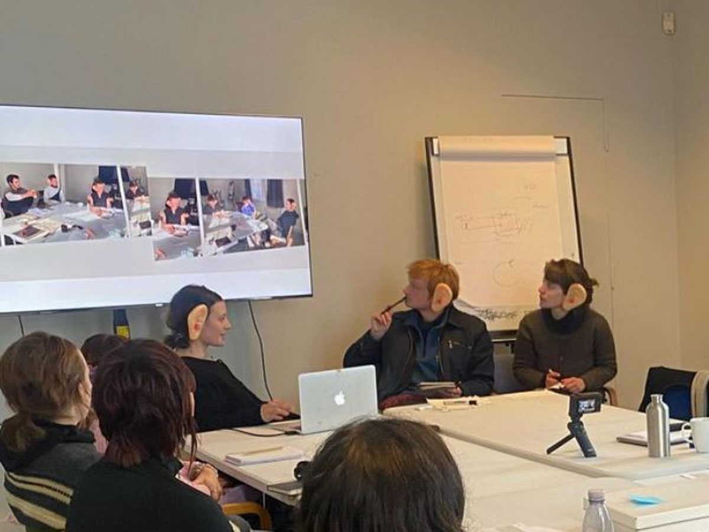

MAJ
FÆRGEMANN
contemporary
artist
artist
ARBEJDER



Skolekunst & Kunstskoler

SKOLEKUNST & KUNSTSKOLER,Composition in Blue, 2022. Mixed media, 60 x 75 cm

Urban Fragments, 2023. Photography, dimensions variable
Reflections, 2021. Watercolor, 30 x 40 cm
Structural Study, 2022. Charcoal on paper, 50 x 65 cm
Ephemeral Moments, 2023. Digital collage, dimensions variable
Spatial Construct No. 3, 2022. Mixed media installation, dimensions variable
Fragmented Memory, 2023. Oil and collage on canvas, 90 x 120 cm
Temporal Shift, 2022. Video installation, dimensions variable
Temporal Shift, 2022. Video installation, dimensions variable
SERIES
Urban Memory (2021-2023)
A series exploring the layered histories of urban environments through photography, painting, and mixed media works. This ongoing project examines how collective memory shapes our experience of built environments.

Temporal Fragments (2020-2022)
This series investigates the fragmentation of time and memory through abstract compositions that layer materials, textures, and imagery. The works create visual palimpsests that speak to the impermanence of experience.